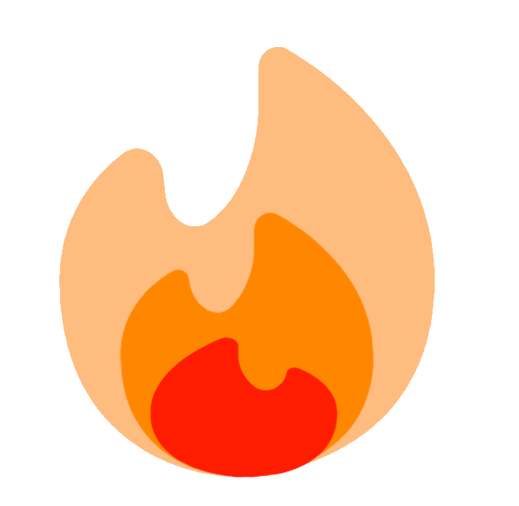

Whitepaper

Table of Contents
Graph

the reasoning: quartz == igneous == ignite == fire == blazingly fast™
Definition
A white paper is an authoritative report or guide that often addresses issues and how to solve them. White papers are used to educate readers and help people make decisions.
- Wikipedia, 00:50, 16 November 2009 (yes i checked the logs)
(callouts to be fixed later(lol))
TLDR
Blaze is a Markdown parser / static site generator written in Rust that creates a static site, to be used however you like! (hopefully nothing illegal).
Preface
Definitions
Blaze $\implies$ The project for which this whitepaper refers to, a Markdown parser written in Rust to make websites "blazingly fast".
User $\implies$ The individual who uses the source code for Blaze
Contributions
This project was made by Ed, with massive help he wrote literally 99.99999% of the rust code from Ossac.
Tag is a "collaborator", but he hasn't done anything. :/
Inspiration
Blaze's links graph(to be added) is heavily inspired by the Jzhao's work on Quartz, which runs on Hugo.
I made Blaze because I wanted to essentially make my own version of Quartz, initially intended to be written in Jekyll, but thanks to Ossac it is instead made from Rust.
The idea for sidenotes (to be added) is inspired from Dave Liepmann's work on Tufte-CSS, which itself stems from the "distinctive style" of the "revolutionary retina of our time", Edward Tufte.
Reasoning
Blaze is built under the following principles:
- Knowledge should be free and widely accessible.
- What this means is that Blaze does not include ways to add paywalls on the resultant websites it makes.
- If someone wants to do that, by all means they can, but that is not what Blaze was designed for.
- Knowledge should be presented however the user likes.
- There's no one style of a website that fits everyone's taste. That's why Blaze offers a "whopping"(2) range of different "themes" for the website, including a minimalist theme.
- However, most work goes into the default theme.
- Knowledge should be expressed in an expressive
and vibrantformat.- This makes it more engaging and more effectively learnt.
- Knowledge that crosses the line between informative and personal should be hidden at the discretion of the user.
- While knowledge should be free, users should not feel forced to liberate their personal information into the wild.
- This can include, and not be limited to, their actual personal details (address, name, credit card number(but seriously if you are gonna do that you're a little goofy)) or works that the user deems personal by their own standards.
- Blaze is not trying to impart any standards on the user, and simply hands them the tool to make the choice for themselves.
Roadmap
2023-07-26
- White paper made
2023-08-18
- Starred by Jzhao!!!!!!
Plans
Essential
Functional TOC- Have the TOC work for more than just h2 and h3. All I need to do is just modify the logic. Should be pretty simple. But I've been putting it off. I think the best way to approach it is to create a file that essentially tests the TOC. From there, I can look at the problem from a better perspective and see how the logic is going to work. This has surprisingly become a rather interesting question with regards to comp sci in general.
Actually add the graphActually add the sidenotes- Frontmatterification
Fix current bugsDescription displayed below title- CSS changes via frontmatter
draft: true prevents the page from being made
Fix formatting for callouts to align with the standard- Make repository into display of all features, breaking down code
- Much like how Quartz does it.
- Shouldn't be too technical, someone like me at the start of this whole thing should be able to understand and learn from it.
- Extreme Customisability using blazeconfig.toml
-
Able to use or not use things like Mathjax directly from blazeconfig.toml
-
Less important
-
Spruce up Backlinks
-
Multi-device layouts
- Should be a simple fix with css. Nothing too hard I hope.
-
Graph full screen mode(like how Quartz does it, looks very hot 👍)
-
x min read on top (literally stolen from Quartz)
Distant
- Full-text search
- Optional natural language search??!?
- More themes!
JacarandaDracula theme potentially? Light dark modenever, dark mode is superior- Just kidding. But I think I'll implement it differently to how Quartz does it. Instead of just a light and dark mode button, I think I might instead have a "settings" button, where the user can make personalisations to the way they view the Blaze website, stored locally of course.
- Search for pathing
- Breadth-first search :(
- SPA???
- Maybe. I have bad memories with SPA from Quartz :( but it makes things faster, and I should be able to implement this alongside with changes to the frontmatter.
- i.e. If the theme of a page is "dracula", for example, this should still be loaded regardless of whether Blaze is configered to be a SPA or not.
Miscellaneous
Donating
Uhh this is a weird topic, which is why I put it in miscellaneous. So, Github has a sponsoring thing, for example you can sponsor Jacky Zhao, creator of Quartz, or Aiden Bai, creator of Million.js(awesome). Now. And I really want to emphasis this.
You do not need to donate anything! For the foreseeable future, all code I work on as a hobby will be free and open source.
In fact, if there's anyone you should sponsor, its Ossac, who's hard carrying this whole project.
But if you do donate to me, umm thanks I guess? Just know all the money will go towards buying this exact brand of blue pea tea.
Why not use Quartz?
You should use Quartz. It's definitely way more well-made, polished and has a great, supportive community. The goal of Blaze is not to surpass or even come close to the quality of Quartz, but instead to be a personal passion project made open source so others can use it. Yeah. Enjoy :)
Can I be a contributor?
Absolutely! If you have something cool to add to the project, just make a pull request. If it works on your machine, it should work on mine and Ossac's as well.
Can I use the code under a non-free(proprietary) license?
Blaze is actually licensed under the Unlicense1, as shown in the repository file. Although I don't suggest you should do something like redistributing the code under a proprietary or commercial license, I don't really have much a say in it. I mean, why on earth would you do such a thing for this kind of project anyways?
Anyways, go ham I guess?
Can I suggest ideas?
Absolutely! Email me at ed@toomwn.xyz, or dm me on Discord, my username is "definitelyeddie.".
Ideas are welcome, but please do not spam my Discord or email, and I (or Ossac) don't have to implement any ideas suggested.